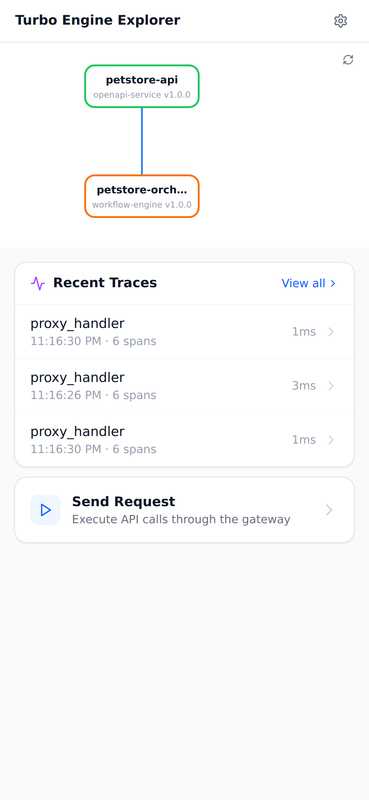

1 FAILED (13/14 passed) — petstore-basic
Petstore API with RPC-to-REST orchestrator. Validates the full request chain: gateway → orchestrator → upstream API, including trace propagation.
Total: 27.2s · 14 tests · 4 screenshots · 0 K8s events
+0.0s
publish(32ms)PASS
POST /v1/packages 201 (28ms)
publish-petstore-apiPublished petstore-api@1.0.0 (HTTP 201) (28ms)
POST /v1/packages 201 (4ms)
publish-petstore-orchestratorPublished petstore-orchestrator@1.0.0 (HTTP 201) (4ms)
+0.0s
environment(3ms)PASS
POST /v1/environments 201 (3ms)
create-environmentCreated 45de9454cf5902396338962571813693 (3ms)
+0.0s
build(6ms)PASS
POST /v1/builds 201 (3ms)
trigger-buildBuild bld-1771715780928-1 triggered (3ms)
Build poll #1: succeeded
build-statusBuild bld-1771715780928-1 succeeded (3ms)
+0.0s
reconcile(5.1s)PASS
POST /v1/reconcile 200 (58ms)
Waiting 5s for operator to settle...
INFO petstore-api: petstore mock starting
INFO petstore-orchestrator: orchestrator starting
+5.1s
operator-reconcileReconciled 2 components (58ms)
+5.1s
k8s-resources(290ms)PASS
Found: deployment/deploy-petstore-api
Found: service/svc-petstore-api
Found: configmap/cm-petstore-api
Found: deployment/deploy-petstore-orchestrator
Found: service/svc-petstore-orchestrator
Found: configmap/cm-petstore-orchestrator
verify-k8s-resourcesAll 6 resources created (290ms)
+5.4s
pods(303ms)PASS
Waiting for deploy-petstore-api...
deploy-petstore-api available
Waiting for deploy-petstore-orchestrator...
deploy-petstore-orchestrator available
pods-runningAll pods running (303ms)
+5.7s
gateway(8ms)PASS
INFO petstore-orchestrator: upstream call start
POST /api/pets/rpc/listPets 200
gateway-routingGateway route /api/pets/rpc/listPets active (HTTP 200) (8ms)
+5.7s
requests(4.0s)FAIL
+7.7s
GET /pets 200 (2004ms)
list-pets-directHTTP 200; pets has 3 items (>= 1) (2004ms)
+9.7s
INFO petstore-orchestrator: upstream call start
POST /rpc/listPets 200 (2006ms)
orchestrator-directHTTP 200; rpc=listPets; upstream_status=200 (2006ms)
INFO petstore-orchestrator: upstream call start
POST /api/pets/rpc/listPets 200 (3ms)
e2e-list-petsHTTP 200; rpc=listPets; upstream_status=200; result.pets has 3 items (>= 1) (3ms)
INFO petstore-orchestrator: upstream call start
POST /api/pets/rpc/getPet?id=2 200 (4ms)
e2e-get-petHTTP 200; result.pet.name=Whiskers (4ms)
INFO petstore-orchestrator: upstream call start
POST /api/pets/rpc/listPets 200 (4ms)
trace-propagationHTTP 200; trace_id: expected 'a0b1c2d3e4f5a6b7c8d9e0f1a2b3c4d5', got 'b31e7208ce63cd5a02daf3ece18fcd56' (4ms)
+9.7s
screenshots(17.3s)
+14.4s
Console packages list after publishing petstore components

+18.6s
Environments list showing the petstore-e2e environment

+22.8s
Console dashboard overview

+27.0s
Explorer mobile UI showing deployed services and traces

+27.0s
logs(212ms)
Captured petstore-api logs (13 lines)
Captured petstore-orchestrator logs (21 lines)
Component Logs
petstore-api (13 lines)
23:16:21.499 INFO petstore mock starting
23:16:26.589 INFO request received
23:16:26.589 INFO response sent
23:16:28.594 INFO request received
23:16:28.594 INFO response sent
23:16:30.599 INFO request received
23:16:30.599 INFO response sent
23:16:30.602 INFO request received
23:16:30.602 INFO response sent
23:16:30.606 INFO request received
23:16:30.606 INFO response sent
23:16:30.610 INFO request received
23:16:30.610 INFO response sent
petstore-orchestrator (21 lines)
23:16:21.537 INFO orchestrator starting
23:16:26.587 INFO request received
23:16:26.587 INFO upstream call start
23:16:26.589 INFO upstream call complete
23:16:26.589 INFO response sent
23:16:30.598 INFO request received
23:16:30.598 INFO upstream call start
23:16:30.599 INFO upstream call complete
23:16:30.599 INFO response sent
23:16:30.602 INFO request received
23:16:30.602 INFO upstream call start
23:16:30.603 INFO upstream call complete
23:16:30.603 INFO response sent
23:16:30.606 INFO request received
23:16:30.606 INFO upstream call start
23:16:30.606 INFO upstream call complete
23:16:30.606 INFO response sent
23:16:30.609 INFO request received
23:16:30.609 INFO upstream call start
23:16:30.610 INFO upstream call complete
23:16:30.610 INFO response sent